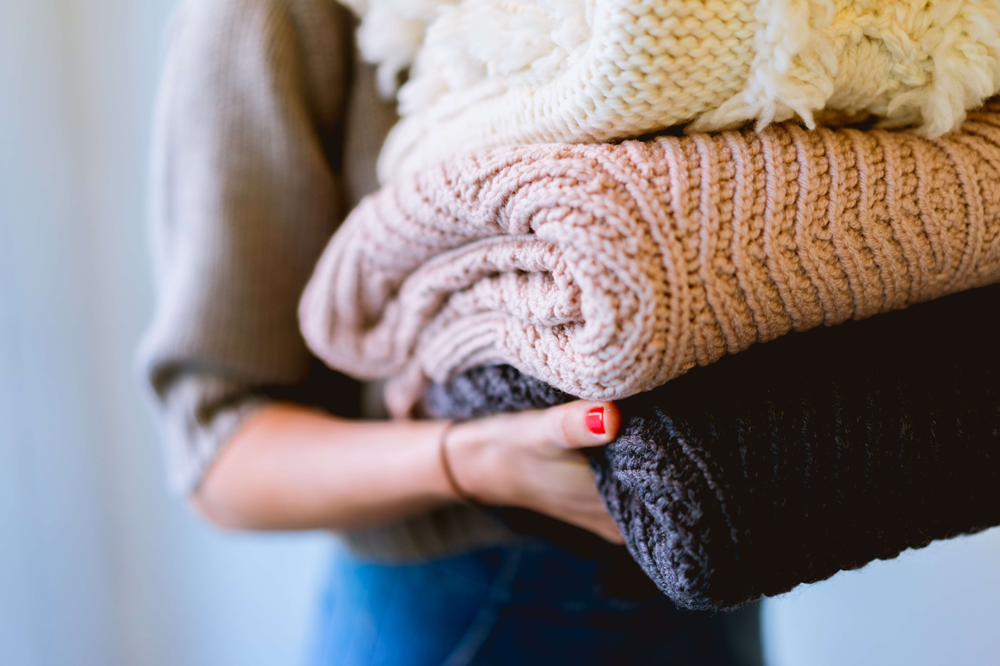
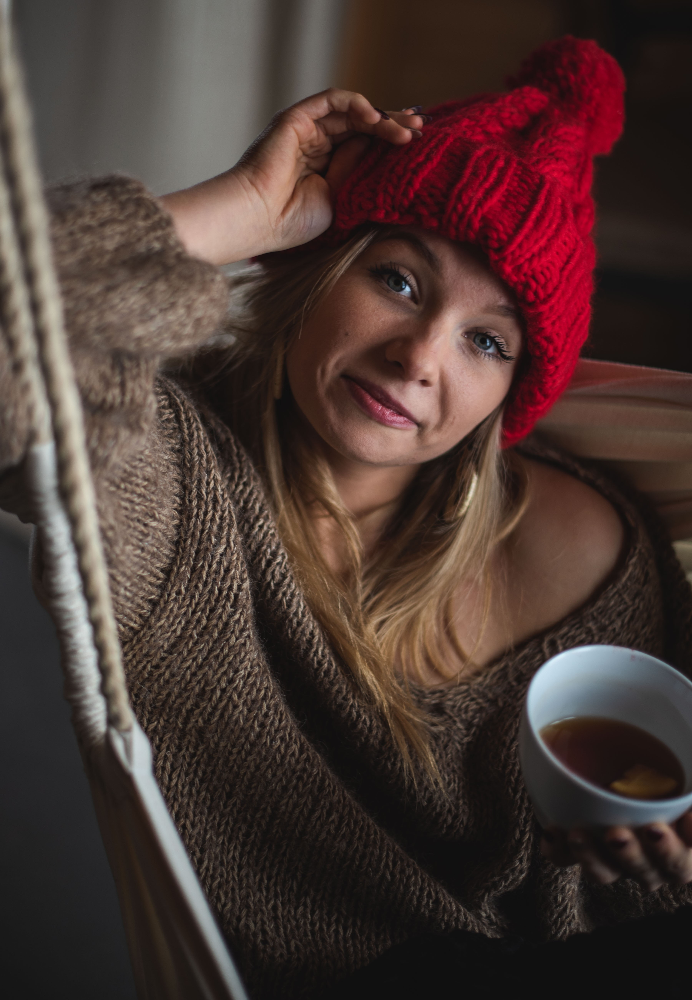

About Us
Founded in 2005 by a small circle of knitting friends, we have grown to include over 300 members! We meet every Tuesday and Thursday at 2:00pm at our local public library. Our mission is to create a sense of community with our fellow knitters, teach new people our craft, and use our skills to help our community!
Charity Work

Socks for the Homeless
Every November we collect hand-knitted socks to hand out to our local homeless community. Last year we collected over 200 pairs of socks!

Baby Blankets
Year-round we accept baby blankets to donate to our local domestic violence shelter. Last year we donated 50 blankets!
Stuffed Animals
We have partnered with our local Police Department to donate stuffed animals to children who have experienced traumatic situations. Last year we donated 100 stuffed animals!
Our Team
Annette Wise
President
Annette has been the President of our club for five years! She has been knitting since she was 8 years old and LOVES to teach people how to knit!
Evan Burgeson
Vice President
Evan has been our Vice President for 2 years and plans to continue for many years to come! Evan has een knitting since he was a young teen and enjoys teaching children how to knit!

Tracy Gomez
Tresurer
This is Tracy's first year as our treasurer and she has excelled! Tracy's journey into fiber arts began a few years ago when she first joined our club!
Ellie Lin
Secretary
Ellie is one of the founding members of our club and has held her position as our secretary for 18 years! If you want to learn more about the history of our club, Ellie is the person to ask!
Frequently Asked Questions
Q: What if I don't know how to knit?
A: We will teach you! Bring your own needles and yarn (or borrow some!) and we have many seasoned members who will be happy to help you get started!
Q: What if I can't attend every meeting?
A: No worries! Come when you can, there is no attendance requirement!
Q: Can I bring a friend with me?
A: Of course! The more the merrier!